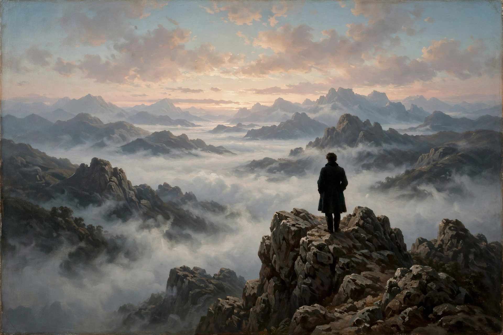

Romanticism

The Wanderer above the Sea of Fog (c. 1818) by Caspar David Friedrich: a man in a dark coat on a rocky peak surveying a sea of mist and mountainsRomanticism was an artistic, literary, musical and intellectual movement that originated in Europe towards the end of the 18th century, and in most areas it was at its peak in the approximate period from 1800 to 1850. It was a reaction against the Industrial Revolution, the scientific rationalisation of nature and the aristocratic norms of the Enlightenment, emphasising strong emotion, imagination, individualism and the glorification of nature and the past, especially the medieval.
In painting its exemplars are Caspar David Friedrich's spiritual landscapes, J. M. W. Turner's sublime seascapes, John Constable's English countryside and Eugène Delacroix's dramatic canvases; in literature, Wordsworth and Coleridge's Lyrical Ballads (1798), Byron, Shelley, Keats and the novelists Walter Scott and Victor Hugo; in music, Beethoven, Schubert, Chopin and Wagner.